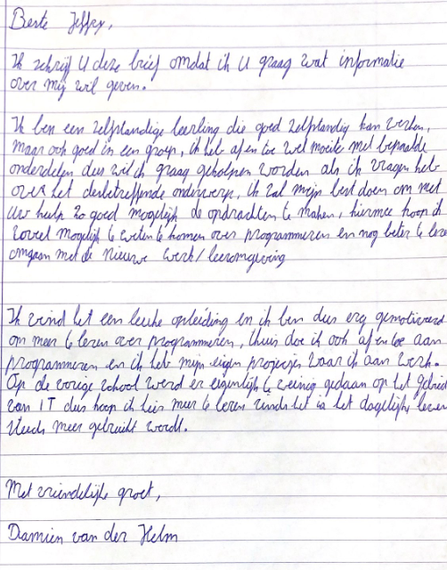
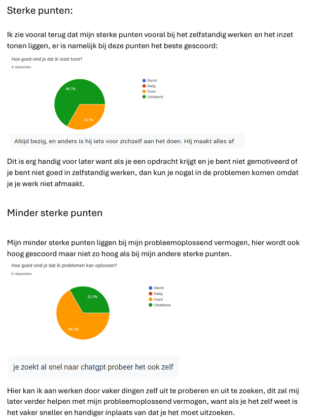
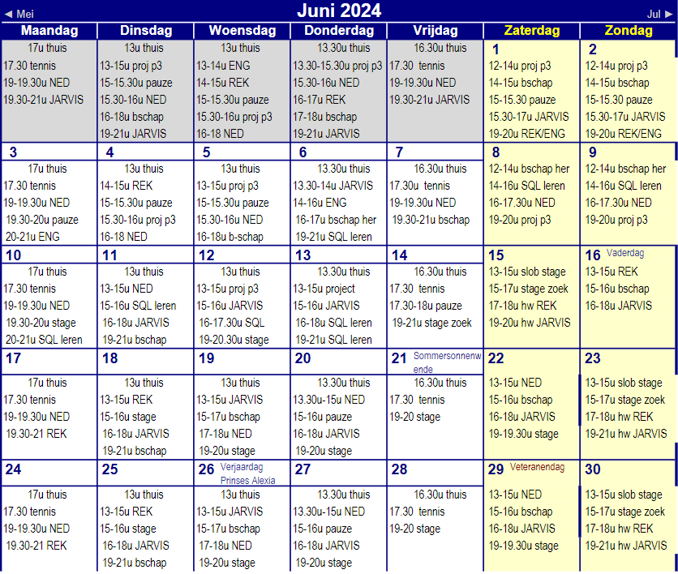
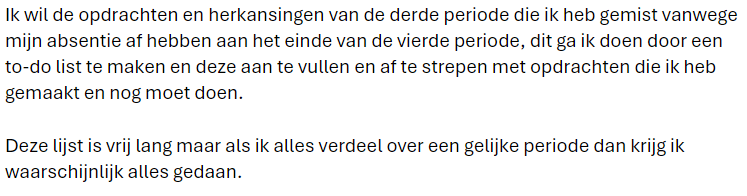
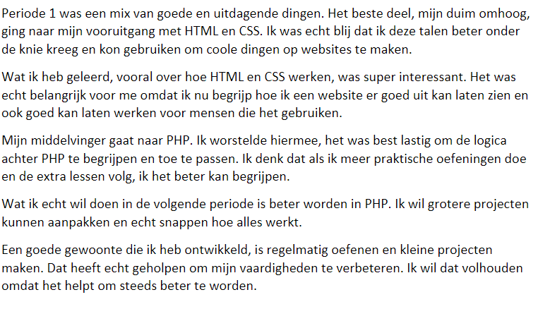
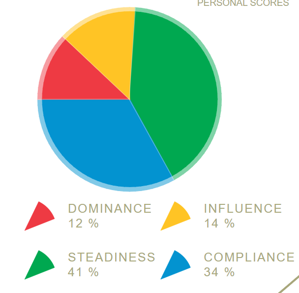
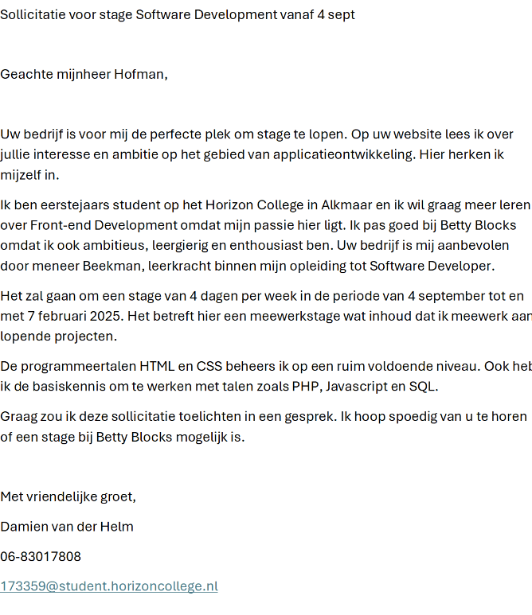

Weet goed wat deze opleiding inhoudt en of deze opleiding bij je past
Brief aan de mentor
In deze brief beschrijf ik waarom ik voor deze opleiding heb gekozen en hoe deze opleiding aansluit bij mijn interesses en vaardigheden.
Je kunt je persoonlijke kwaliteiten benoemen en uitleggen
360 graden feedback
In deze opdracht heb ik feedback van verschillende mensen om mij heen verzameld om een compleet beeld van mijn kwaliteiten te krijgen.
Je ontwikkelt studievaardigheden en kunt deze inzetten
Week en dagplanner
Met behulp van een week- en dagplanner heb ik mijn studie-tijd effectief ingepland.
Doelen SMART formuleren
In deze opdracht heb ik mijn doelen volgens de SMART-methode geformuleerd om ze concreet en haalbaar te maken.
Je kunt reflecteren volgens verschillende manieren en deze inzetten
Reflecteren hand model
Met het hand model heb ik mijn reflectievaardigheden verder ontwikkeld.
Je krijgt meer inzicht in jouw motieven om in de ICT te werken
Disc test
De resultaten van de Disc test geven inzicht in mijn gedragsstijlen en persoonlijke kwaliteiten.
Je ontwikkelt je persoonlijk maar ook beroepsmatig
LinkedIn profiel aanmaken
Op mijn LinkedIn profiel heb ik mijn persoonlijke kwaliteiten en ervaringen gedeeld, zodat potentiële werkgevers een goed beeld van mij krijgen.
→ LinkedIn profiel ←
Je weet wat een goede beroepshouding is, en wat het beroep inhoudt
Stage voorbereiding (sollicitatiebrief)
Voorbereiding op mijn stage omvat het schrijven van een sollicitatiebrief, het opstellen van een professionele e-mail en een belscript.
Je weet in welke branches je kunt werken als je gediplomeerd bent en wat het werk inhoudt
LinkedIn profiel aanmaken
Op mijn LinkedIn profiel heb ik mijn persoonlijke kwaliteiten en ervaringen gedeeld, zodat potentiële werkgevers een goed beeld van mij krijgen.
→ LinkedIn profiel ←
Je maakt een beargumenteerde keuze over het vervolg na je opleiding
Brief aan de mentor
In deze brief beschrijf ik waarom ik voor deze opleiding heb gekozen en hoe deze opleiding aansluit bij mijn interesses en vaardigheden.
Je leert verantwoordelijkheid te nemen voor je eigen leerproces
Week en dagplanner
Met behulp van een week- en dagplanner heb ik mijn studie-tijd effectief ingepland.
Doelen SMART formuleren
In deze opdracht heb ik mijn doelen volgens de SMART-methode geformuleerd om ze concreet en haalbaar te maken.